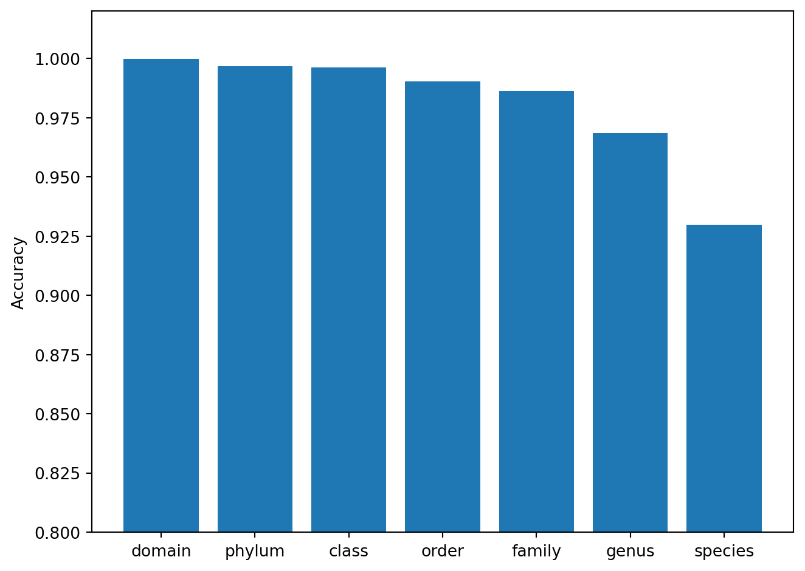
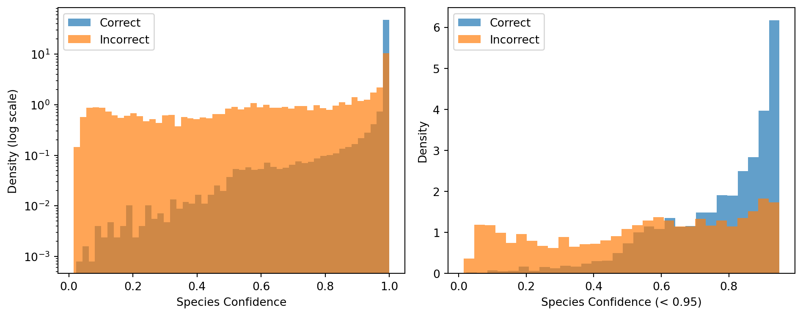

flowchart LR
A[DNA Sequence] --> B[BPE Tokenizer]
B --> C[CNN Pathway]
B --> D[Transformer Pathway]
C --> E[Fusion]
D --> E
E --> F[7 Classification Heads]
F --> G[Domain ... Species]
style A fill:#f5efe4,stroke:#7a6343
style B fill:#f5efe4,stroke:#7a6343
style C fill:#d6efe8,stroke:#1f6b4f
style D fill:#d8e4f0,stroke:#2a5278
style E fill:#e4dced,stroke:#5a3d75
style F fill:#f0e2d6,stroke:#994a2a
style G fill:#f0e2d6,stroke:#994a2a
Taxonomic Classification of 16S rRNA Sequences with DeepTaxa
Running the pre-trained model and interpreting per-rank predictions and confidence scores
Objective. Classify a set of 16S rRNA sequences with a pre-trained DeepTaxa model and interpret the per-rank taxonomic predictions and confidence scores.
Prerequisites. DeepTaxa (pip install deeptaxa-rrna), Python 3.10 or later, and PyTorch 2.4 or later. A CUDA-capable GPU is optional; prediction also runs on CPU.
Inputs. A FASTA file of 16S sequences and a pre-trained model checkpoint (about 306 MB), plus an optional ground-truth taxonomy file for evaluation. Outputs. A per-rank taxonomy TSV with confidence and entropy columns, along with accuracy and confidence summary figures. Runtime. A few minutes; the full test-set prediction takes about 6 minutes on an NVIDIA A40 GPU.
Last validated July 2026.
The 16S ribosomal RNA gene is a roughly 1,500-nucleotide region present in all bacteria and archaea. Because portions of this gene evolve slowly while others accumulate mutations rapidly, it serves as a molecular clock for placing organisms within the tree of life. Sequencing the 16S gene from an environmental sample and assigning each read to a taxonomic lineage is one of the foundational tasks in microbial ecology and clinical microbiome research (McDonald et al., 2024).
DeepTaxa is a hybrid deep learning model that classifies 16S sequences into a seven-rank taxonomic hierarchy: Domain, Phylum, Class, Order, Family, Genus, and Species. It combines convolutional neural networks (for detecting local sequence motifs) with a Transformer encoder (for capturing long-range dependencies across the full gene), and produces independent predictions at each rank along with calibrated confidence scores.
This tutorial walks through the prediction workflow: loading a pre-trained model, classifying a set of test sequences, and interpreting the results. The companion tutorials cover model training and in-depth performance analysis.
Note
The code cells below are designed to be read in order. To run them, copy the commands into a terminal or Jupyter session on a machine with a CUDA-capable GPU.
1 Setup
The following cells configure the Python environment and verify GPU availability. DeepTaxa uses mixed-precision inference on CUDA GPUs, which reduces memory usage and increases throughput compared to CPU-only execution.
Tip
The PATH modification and GPU verification below are specific to containerized environments (e.g., Vast.ai, Docker) where the system Python differs from the virtual environment. If you are running on a local machine with CUDA already configured, skip ahead to the installation step.
# Configure PATH so bash cells find the GPU-enabled Python
import os
os.environ['PATH'] = '/venv/main/bin:' + os.environ['PATH']Check that PyTorch detects the GPU. The output should show True, the device count, and the GPU model name.
import torch
print(torch.cuda.is_available())
print(torch.cuda.device_count())
print(torch.cuda.get_device_name(0) if torch.cuda.is_available() else 'No GPU')True
1
NVIDIA A40Install DeepTaxa from PyPI, along with the optional libraries for evaluation and plotting. DeepTaxa is distributed as deeptaxa-rrna; after installation the command-line tool is deeptaxa. Bioconda is an alternative for Conda-based toolchains (conda install -c bioconda deeptaxa-rrna).
%%bash
mkdir -p ~/deeptaxa-workspace
python -m pip install -q deeptaxa-rrna
python -m pip install -q matplotlib scikit-learnConfirm the installation.
%%bash
deeptaxa --versionDeepTaxa 1.2.02 Data and model
DeepTaxa ships a pre-trained checkpoint on Hugging Face. This checkpoint was trained on approximately 277,000 full-length 16S sequences from the Greengenes 2 reference database (release 2024.09), covering over 16,000 species across 129 bacterial and archaeal phyla.
The test set contains 69,335 sequences held out from training. Each sequence carries a known ground-truth taxonomy, enabling direct measurement of classification accuracy. The commands below place all files under a shared workspace directory:
| File | Description | Size |
|---|---|---|
data/models/deeptaxa-full-length-v2.pt |
Pre-trained model checkpoint | ~306 MB |
data/greengenes/gg_2024_09_testing.fna.gz |
Test sequences (FASTA, compressed) | ~65 MB |
data/greengenes/gg_2024_09_testing.tsv.gz |
Ground-truth taxonomy (TSV, compressed) | ~1.5 MB |
Download the pre-trained checkpoint and the test data from Hugging Face.
%%bash
cd ~/deeptaxa-workspace
mkdir -p data/models data/greengenes
test -f data/models/deeptaxa-full-length-v2.pt || curl -L -o data/models/deeptaxa-full-length-v2.pt https://huggingface.co/systems-genomics-lab/deeptaxa/resolve/main/deeptaxa-full-length-v2.pt
test -f data/greengenes/gg_2024_09_testing.fna.gz || curl -L -o data/greengenes/gg_2024_09_testing.fna.gz https://huggingface.co/datasets/systems-genomics-lab/greengenes/resolve/main/gg_2024_09_testing.fna.gz
test -f data/greengenes/gg_2024_09_testing.tsv.gz || curl -L -o data/greengenes/gg_2024_09_testing.tsv.gz https://huggingface.co/datasets/systems-genomics-lab/greengenes/resolve/main/gg_2024_09_testing.tsv.gzList the downloaded files.
%%bash
cd ~/deeptaxa-workspace && du -h data/models/* data/greengenes/*293M data/models/deeptaxa-full-length-v2.pt
293M data/models/deeptaxa-full-length-v2-seed1011.pt
293M data/models/deeptaxa-full-length-v2-seed123.pt
293M data/models/deeptaxa-full-length-v2-seed42.pt
293M data/models/deeptaxa-full-length-v2-seed456.pt
293M data/models/deeptaxa-full-length-v2-seed789.pt
25M data/greengenes/gg_2024_09_testing.fna.gz
812K data/greengenes/gg_2024_09_testing.tsv.gz
97M data/greengenes/gg_2024_09_training.fna.gz
2.7M data/greengenes/gg_2024_09_training.tsv.gzTo confirm that the downloads are intact, compare each file against its published SHA-256 checksum. The following commands write the expected values to a file and verify them; every line should report OK.
cd ~/deeptaxa-workspace
cat > data/CHECKSUMS.sha256 <<'EOF'
b924500450ba623e26c7a023bf7246c0d4fb61787e8aa8d720d7ad35c3c6dfb4 data/models/deeptaxa-full-length-v2.pt
d79347cb231edc72371c20daa8384581a1e6fbb9fa8ad6e172a3eecba29b5709 data/greengenes/gg_2024_09_testing.fna.gz
d5268e7980ce81a39a521e22ff6078f622843c792682e7f95519188475c6d6bb data/greengenes/gg_2024_09_testing.tsv.gz
EOF
sha256sum -c data/CHECKSUMS.sha2563 Running predictions
3.1 How prediction works
When DeepTaxa receives a DNA sequence, it processes it through four stages:
Tokenization. The raw nucleotide string is split into subword tokens using DNABERT-2 (Zhou et al., 2024)’s byte-pair encoding (BPE) vocabulary (4,096 tokens). This is analogous to how language models tokenize text into word pieces rather than individual characters.
Feature extraction. The token sequence passes through two parallel pathways: a set of convolutional filters that detect local motifs (256 filters at each of three kernel widths: 3, 5, and 7 tokens), and a Transformer encoder (4 layers, 7 attention heads) that models dependencies across the full 512-token window.
Fusion. The outputs of both pathways are combined through a learnable scalar fusion weight and passed through a dropout layer.
Classification. Seven independent linear heads produce probability distributions over the classes at each taxonomic rank. The predicted class is the one with the highest probability, and that probability serves as the confidence score.
3.2 Single-sequence prediction
To verify the setup, we extract one sequence from the test set and classify it. The --tabular flag requests tab-separated output with columns for the predicted label, confidence score, and entropy at each rank.
%%bash
cd ~/deeptaxa-workspace
mkdir -p outputs/single_sequence
# Extract the first record from the compressed FASTA
zcat data/greengenes/gg_2024_09_testing.fna.gz | awk 'BEGIN{RS=">"; ORS=""} NR==2 {print ">"$0; exit}' > outputs/single_sequence/single_sequence.fna
deeptaxa predict --fasta-file outputs/single_sequence/single_sequence.fna --checkpoint data/models/deeptaxa-full-length-v2.pt --tabular --output-dir outputs/single_sequence2026-07-07 14:50:07,226 - INFO -
======================================================================
DeepTaxa Prediction Session (v1.2.0)
--------------------------------------------------
Started: 2026-07-07T14:50:07.226947
======================================================================
2026-07-07 14:50:09,080 - INFO - Initialized HybridCNNBERTClassifier with CNN: {'embed_dim': 896, 'num_filters': 256, 'kernel_sizes': [3, 5, 7], 'num_conv_layers': 1, 'dropout_prob': 0.2}, BERT hidden_size=896, output_attentions=False
2026-07-07 14:50:09,145 - INFO - Model loaded from checkpoint: data/models/deeptaxa-full-length-v2.pt with type: hybridcnnbert
2026-07-07 14:50:09,347 - INFO - Loaded 1 sequences from outputs/single_sequence/single_sequence.fna
Predicting: 0%| | 0/1 [00:00<?, ?it/s]
Predicting: 100%|██████████| 1/1 [00:00<00:00, 1.05it/s]
Predicting: 100%|██████████| 1/1 [00:00<00:00, 1.00it/s]
2026-07-07 14:50:10,353 - INFO - Saved run UUID to outputs/single_sequence/deeptaxa_uuid.txt
2026-07-07 14:50:10,353 - INFO -
======================================================================
DeepTaxa Prediction Summary (v1.2.0)
--------------------------------------------------
Here's a summary of your prediction results:
- Total Sequences Processed: 1
- Prediction Time: 3.13 seconds
- Completed At: 2026-07-07T14:50:10.352490
======================================================================
2026-07-07 14:50:10,353 - INFO - Performance Metrics by Taxonomic Rank:
2026-07-07 14:50:10,353 - INFO - Rank | Mean Score | Std Score | Accuracy | Top-{top_k} Acc | F1 | Precision | Recall | AUC
2026-07-07 14:50:10,353 - INFO - ---------------------------------------------------------------------------------------------------------------------------------
2026-07-07 14:50:10,354 - INFO - domain | 1.0000 | 0.0000 | N/A | N/A | N/A | N/A | N/A | N/A
2026-07-07 14:50:10,354 - INFO - phylum | 1.0000 | 0.0000 | N/A | N/A | N/A | N/A | N/A | N/A
2026-07-07 14:50:10,354 - INFO - class | 1.0000 | 0.0000 | N/A | N/A | N/A | N/A | N/A | N/A
2026-07-07 14:50:10,354 - INFO - order | 1.0000 | 0.0000 | N/A | N/A | N/A | N/A | N/A | N/A
2026-07-07 14:50:10,354 - INFO - family | 1.0000 | 0.0000 | N/A | N/A | N/A | N/A | N/A | N/A
2026-07-07 14:50:10,354 - INFO - genus | 1.0000 | 0.0000 | N/A | N/A | N/A | N/A | N/A | N/A
2026-07-07 14:50:10,354 - INFO - species | 1.0000 | 0.0000 | N/A | N/A | N/A | N/A | N/A | N/A
2026-07-07 14:50:10,674 - INFO - Saved prediction results to: outputs/single_sequence/single_sequence_deeptaxa_predictions.json
2026-07-07 14:50:10,687 - INFO - Saved tabular prediction results to: outputs/single_sequence/single_sequence_deeptaxa_predictions.tsv
2026-07-07 14:50:10,687 - INFO -
======================================================================
Thank you for using DeepTaxa 🤗
======================================================================3.3 Full test set prediction
For a systematic evaluation, we classify all 69,335 test sequences. Passing --taxonomy-file tells DeepTaxa to compare each prediction against the known label and report agreement statistics. This step takes approximately 6 minutes on an NVIDIA A40 GPU.
%%bash
cd ~/deeptaxa-workspace
deeptaxa predict --fasta-file data/greengenes/gg_2024_09_testing.fna.gz --taxonomy-file data/greengenes/gg_2024_09_testing.tsv.gz --checkpoint data/models/deeptaxa-full-length-v2.pt --tabular --output-dir outputs/predictionsVerify that the prediction output was saved.
import os, glob
os.chdir(os.path.expanduser('~/deeptaxa-workspace'))
pred_files = sorted(glob.glob('outputs/predictions/*_predictions.tsv'))
for f in pred_files:
size_mb = os.path.getsize(f) / (1024 * 1024)
print(f'{f} ({size_mb:.1f} MB)')outputs/predictions/gg_2024_09_testing_deeptaxa_predictions.tsv (26.4 MB)4 Interpreting the results
The prediction output is a TSV file with one row per sequence, identified by a sequence_id column. For each of the seven taxonomic ranks, the file then reports:
| Column | Description |
|---|---|
{rank}_predicted |
The predicted taxonomy label |
{rank}_true |
The ground-truth label (if taxonomy file was provided) |
{rank}_raw_score |
The softmax probability of the predicted class (confidence) |
{rank}_entropy |
Shannon entropy of the full probability distribution |
{rank}_agreement |
Whether the prediction matches the ground truth |
The cells below load this file and compute summary statistics.
Load the prediction output into a pandas DataFrame.
# --- Load predictions ---
import os
os.chdir(os.path.expanduser('~/deeptaxa-workspace'))
import pandas as pd
import numpy as np
import matplotlib.pyplot as plt
from sklearn.metrics import accuracy_score
import glob
RANKS = ['domain', 'phylum', 'class', 'order', 'family', 'genus', 'species']
df = pd.read_csv(sorted(glob.glob('outputs/predictions/*_predictions.tsv'))[0], sep='\t')
print('Loaded', len(df), 'predictions')Loaded 69335 predictions4.1 Per-rank accuracy
Classification accuracy at rank \(r\) is the fraction of sequences where the predicted and true labels match:
\[\text{Accuracy}_r = \frac{1}{N} \sum_{i=1}^{N} \mathbb{1}[\hat{y}_{i,r} = y_{i,r}]\]
where \(N\) is the number of test sequences, \(\hat{y}_{i,r}\) is the predicted label for sequence \(i\) at rank \(r\), and \(y_{i,r}\) is the true label.
We expect accuracy to decrease from domain to species. At the domain level, the model distinguishes only Bacteria from Archaea (two classes with large sequence differences). At the species level, it must discriminate among over 16,000 classes, many of which differ by only a handful of nucleotide positions within the variable regions of the 16S gene.
Compute and plot accuracy at each rank.
# --- Per-rank accuracy ---
accuracies = [accuracy_score(df[f'{r}_true'], df[f'{r}_predicted']) for r in RANKS]
plt.figure()
plt.bar(RANKS, accuracies)
plt.ylabel('Accuracy')
plt.ylim(0.8, 1.02)
plt.xticks(rotation=0, ha='center')
plt.tight_layout()
plt.show()
The bar chart confirms the expected gradient: accuracy exceeds 99% at Domain through Class, then decreases to approximately 93% at Species. This pattern is consistent across taxonomic classifiers and reflects the fundamental challenge of resolving fine-grained distinctions from a single marker gene.
4.2 Prediction confidence
For each sequence, DeepTaxa reports the maximum softmax probability as a confidence score. The softmax function converts the raw logits \(z_1, z_2, \ldots, z_C\) (one per class, where \(C\) is the number of classes at that rank) into a probability distribution:
\[p_c = \frac{e^{z_c}}{\sum_{j=1}^{C} e^{z_j}}\]
The confidence is \(\max_c \, p_c\). A value near 1.0 means the model assigns almost all probability mass to a single class; a value near \(1/C\) indicates that mass is spread across many classes and the prediction is unreliable.
In practice, confidence supports quality filtering: predictions above a threshold are retained while low-confidence predictions are flagged for manual review or excluded from downstream analysis.
Note
DeepTaxa uses a default confidence threshold of 0.95, chosen because the vast majority of misclassifications fall below this value (see the confidence analysis below). For applications that prioritize recall over precision, the threshold can be lowered; for applications where every retained prediction must be reliable, it should be raised. The best threshold is not universal: it can shift with the amplicon region, the read length, how well the reference database covers your taxa, and how much a given analysis weighs precision against recall, so treat 0.95 as a starting point rather than a fixed rule.
Tip
The left panel below uses a logarithmic y-axis to reveal the shape of the distribution below the dominant spike at 1.0. The right panel zooms into sequences with confidence below 0.95, where the separation between correct and incorrect predictions is most visible.
Plot the confidence distribution for correct and incorrect species predictions.
# --- Confidence analysis at species level ---
correct = df['species_predicted'] == df['species_true']
fig, (ax1, ax2) = plt.subplots(1, 2, figsize=(10, 4))
# Left: full range, log scale
ax1.hist(df.loc[correct, 'species_raw_score'], bins=50, alpha=0.7, label='Correct', density=True)
ax1.hist(df.loc[~correct, 'species_raw_score'], bins=50, alpha=0.7, label='Incorrect', density=True)
ax1.set_yscale('log')
ax1.set_xlabel('Species Confidence')
ax1.set_ylabel('Density (log scale)')
ax1.legend()
# Right: zoom below 0.95
low_correct = df.loc[correct, 'species_raw_score'][df.loc[correct, 'species_raw_score'] < 0.95]
low_incorrect = df.loc[~correct, 'species_raw_score'][df.loc[~correct, 'species_raw_score'] < 0.95]
ax2.hist(low_correct, bins=30, alpha=0.7, label='Correct', density=True)
ax2.hist(low_incorrect, bins=30, alpha=0.7, label='Incorrect', density=True)
ax2.set_xlabel('Species Confidence (< 0.95)')
ax2.set_ylabel('Density')
ax2.legend()
plt.tight_layout()
plt.show()
Print confidence summary statistics.
# --- Confidence summary statistics ---
print('Correct: mean confidence =', round(df.loc[correct, 'species_raw_score'].mean(), 3))
print('Incorrect: mean confidence =', round(df.loc[~correct, 'species_raw_score'].mean(), 3))
print('Incorrect predictions below 0.95:', round((df.loc[~correct, 'species_raw_score'] < 0.95).mean() * 100, 1), '%')Correct: mean confidence = 0.987
Incorrect: mean confidence = 0.665
Incorrect predictions below 0.95: 72.9 %The histograms show a strong separation: correctly classified sequences cluster near confidence 1.0, while incorrect predictions spread across the full range. The zoomed panel reveals that most incorrect predictions fall below the 0.95 threshold, confirming that confidence filtering is a useful strategy for flagging or removing many unreliable assignments.
4.3 Examining individual predictions
The table below prints a few correctly and incorrectly classified sequences, showing the true and predicted labels at all seven ranks. This makes error patterns visible: when the model assigns the wrong species, does it at least get the genus right?
A [+] indicates that the predicted label matches the ground truth at that rank. An [X] indicates disagreement.
Print three correct and three incorrect species predictions with per-rank agreement markers.
# --- Example predictions ---
for label, mask in [('Correct', correct), ('Incorrect', ~correct)]:
print("\n===", label, "species predictions (first 3) ===")
for _, row in df.loc[mask].head(3).iterrows():
print("\nSequence:", row.get("sequence_id", "N/A"))
for r in RANKS:
t, p = row.get(f'{r}_true', '?'), row.get(f'{r}_predicted', '?')
print(" ", "[+]" if t == p else "[X]", r + ":", "true=" + str(t) + ",", "pred=" + str(p))
=== Correct species predictions (first 3) ===
Sequence: MJ031-2-barcode64-umi2692bins-ubs-145
[+] domain: true=Bacteria, pred=Bacteria
[+] phylum: true=Desulfobacterota_G_459544, pred=Desulfobacterota_G_459544
[+] class: true=SM23-61, pred=SM23-61
[+] order: true=SM23-61, pred=SM23-61
[+] family: true=SM23-61, pred=SM23-61
[+] genus: true=SM23-61, pred=SM23-61
[+] species: true=SM23-61 sp001304105, pred=SM23-61 sp001304105
Sequence: KY937951
[+] domain: true=Bacteria, pred=Bacteria
[+] phylum: true=Bacillota_I, pred=Bacillota_I
[+] class: true=Bacilli_A, pred=Bacilli_A
[+] order: true=Lactobacillales, pred=Lactobacillales
[+] family: true=Vagococcaceae, pred=Vagococcaceae
[+] genus: true=Vagococcus_B, pred=Vagococcus_B
[+] species: true=Vagococcus_B vulneris, pred=Vagococcus_B vulneris
Sequence: MJ006-2-barcode72-umi1971bins-ubs-52
[+] domain: true=Bacteria, pred=Bacteria
[+] phylum: true=Pseudomonadota, pred=Pseudomonadota
[+] class: true=Gammaproteobacteria, pred=Gammaproteobacteria
[+] order: true=Enterobacterales_737866, pred=Enterobacterales_737866
[+] family: true=Pasteurellaceae, pred=Pasteurellaceae
[+] genus: true=Haemophilus_D_735815, pred=Haemophilus_D_735815
[+] species: true=Unclassified_Haemophilus_D_735815, pred=Unclassified_Haemophilus_D_735815
=== Incorrect species predictions (first 3) ===
Sequence: MJ020-1-barcode40-umi32720bins-ubs-13
[+] domain: true=Bacteria, pred=Bacteria
[+] phylum: true=Pseudomonadota, pred=Pseudomonadota
[+] class: true=Gammaproteobacteria, pred=Gammaproteobacteria
[+] order: true=Francisellales, pred=Francisellales
[+] family: true=Francisellaceae, pred=Francisellaceae
[X] genus: true=Unclassified_Francisellaceae, pred=Cysteiniphilum
[X] species: true=Unclassified_Francisellaceae, pred=Cysteiniphilum marinum
Sequence: G009841605_1
[+] domain: true=Bacteria, pred=Bacteria
[+] phylum: true=Chloroflexota, pred=Chloroflexota
[+] class: true=Dehalococcoidia, pred=Dehalococcoidia
[+] order: true=SAR202, pred=SAR202
[X] family: true=VXLM01, pred=B3-Chlor
[X] genus: true=VXLM01, pred=UBA11996
[X] species: true=VXLM01 sp009841605, pred=Bin90 sp002238855
Sequence: RS-GCF-014654365.1-NZ-BNAY01000027.1
[+] domain: true=Bacteria, pred=Bacteria
[+] phylum: true=Actinomycetota, pred=Actinomycetota
[+] class: true=Actinomycetes, pred=Actinomycetes
[+] order: true=Mycobacteriales, pred=Mycobacteriales
[+] family: true=Pseudonocardiaceae, pred=Pseudonocardiaceae
[X] genus: true=Amycolatopsis_D_380379, pred=Amycolatopsis_D_380435
[X] species: true=Amycolatopsis_D_380400 oliviviridis, pred=Amycolatopsis_D_380435 albaIn most incorrect cases, the species label differs but the genus and family remain correct. This indicates that the model makes taxonomically shallow errors, confusing closely related species rather than assigning sequences to distant lineages.
5 Summary
DeepTaxa classified 69,335 held-out 16S rRNA sequences with 93.0% species-level accuracy and 92.1% weighted F1-score. Performance exceeds 99% from Domain through Class, and decreases gradually at finer ranks as the number of target classes grows and the distinguishing sequence features become subtler.
Prediction confidence strongly separates correct from incorrect classifications (mean 0.987 vs. 0.665), supporting the default confidence threshold of 0.95 as a practical starting point for flagging potentially unreliable predictions.
For training a model on custom reference data, see the training tutorial. For a deeper analysis of error patterns, calibration, and generalization to novel taxa, see the analysis tutorial.
6 Concepts used in this tutorial
This tutorial uses several standard terms: accuracy, the 16S rRNA gene, the taxonomic hierarchy, softmax, and byte-pair encoding. See the Glossary for short definitions.
7 Key references
This tutorial uses the Greengenes 2 reference database (McDonald et al., 2024) and the DNABERT-2 tokenizer (Zhou et al., 2024). See the References page for the complete bibliography.